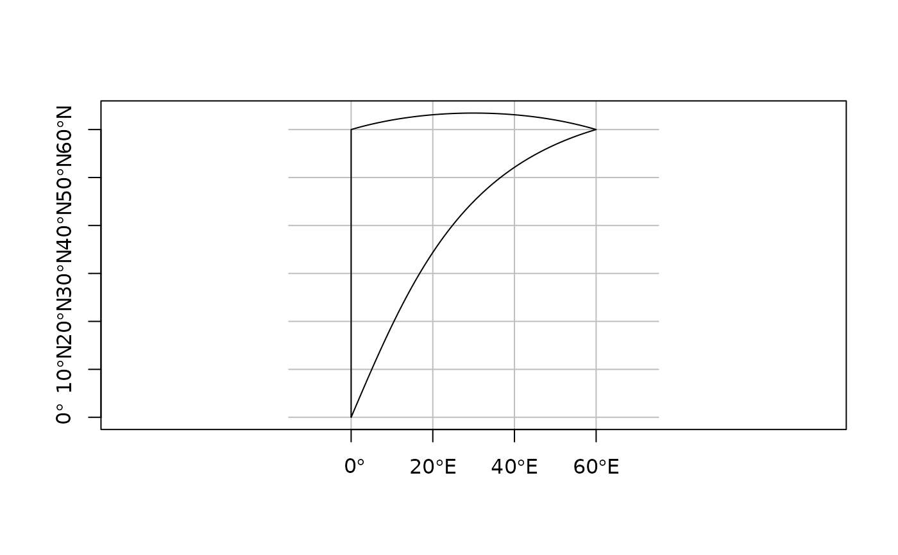

liblwgeom geodetic functions for length, area, segmentizing, covers
st_geod_area(x) st_geod_length(x) st_geod_segmentize(x, max_seg_length) st_geod_covers(x, y, sparse = TRUE) st_geod_covered_by(x, y, sparse = TRUE) st_geod_distance(x, y, tolerance = 0, sparse = FALSE)
| x | object of class |
|---|---|
| max_seg_length | segment length in degree, radians, or as a length unit (e.g., m) |
| y | object of class |
| sparse | logical; if |
| tolerance | double or length |
st_area will give an error message when the area spans the equator and lwgeom is linked to a proj.4 version older than 4.9.0 (see lwgeom_extSoftVersion)
longitude coordinates returned are rescaled to [-180,180)
this function should is used by st_distance, do not use it directly
#> Reading layer `nc.gpkg' from data source `/home/travis/R/Library/sf/gpkg/nc.gpkg' using driver `GPKG' #> Simple feature collection with 100 features and 14 fields #> geometry type: MULTIPOLYGON #> dimension: XY #> bbox: xmin: -84.32385 ymin: 33.88199 xmax: -75.45698 ymax: 36.58965 #> epsg (SRID): 4267 #> proj4string: +proj=longlat +datum=NAD27 +no_defsst_geod_area(nc[1:3,])#> Units: [m^2] #> [1] 1137394863 611054589 1423433600# st_area(nc[1:3,]) l = st_sfc(st_linestring(rbind(c(7,52), c(8,53))), crs = 4326) st_geod_length(l)#> 130359.3 [m]library(units)#>pol = st_polygon(list(rbind(c(0,0), c(0,60), c(60,60), c(0,0)))) x = st_sfc(pol, crs = 4326) seg = st_geod_segmentize(x[1], set_units(10, km)) plot(seg, graticule = TRUE, axes = TRUE)pole = st_polygon(list(rbind(c(0,80), c(120,80), c(240,80), c(0,80)))) pt = st_point(c(0,90)) x = st_sfc(pole, pt, crs = 4326) st_geod_covers(x[c(1,1,1)], x[c(2,2,2,2)])#> Sparse geometry binary predicate list of length 3, where the predicate was `covers' #> 1: 1, 2, 3, 4 #> 2: 1, 2, 3, 4 #> 3: 1, 2, 3, 4pole = st_polygon(list(rbind(c(0,80), c(120,80), c(240,80), c(0,80)))) pt = st_point(c(30,70)) x = st_sfc(pole, pt, crs = 4326) st_geod_distance(x, x)#> Units: [m] #> [,1] [,2] #> [1,] 0 1378923 #> [2,] 1378923 0